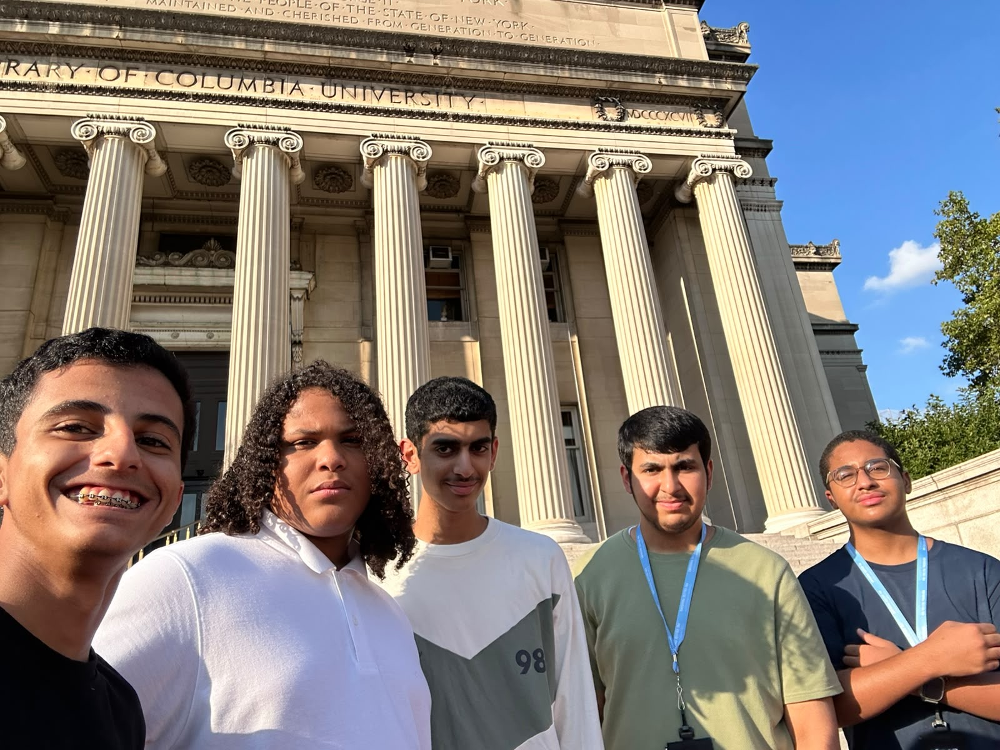

Columbia University
Math in the Real World
During my three-week program at Columbia University, I took part in an engaging academic experience focused on mathematics and its real-world applications. We attended four hours of classes each day, where we explored different mathematical concepts, ideas, and interesting topics through discussions and activities. Throughout the three weeks, I developed my analytical thinking and problem-solving skills while learning in an international academic environment. At the end of the program, we completed a project based on an interesting theme we had explored during the three weeks, allowing us to apply what we had learned and present our understanding in a practical way.
